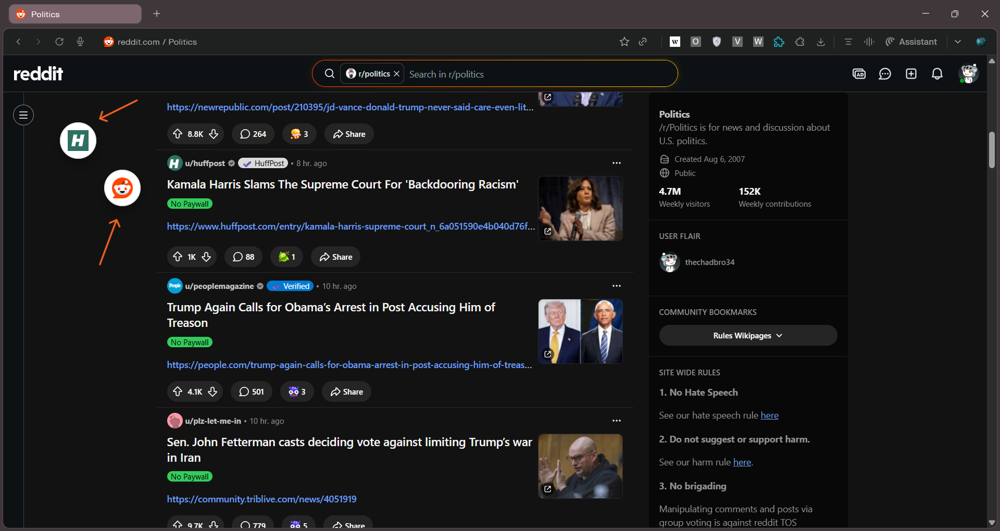

Preview links instantly without opening new tabs.
GoPeek lets you open links in floating mini windows without leaving your current page. Research faster, reduce tab chaos, and stay focused while browsing.
Your browser shouldn’t explode into 47 tabs just to check a few links.
GoPeek replaces the annoying “open in new tab → check → close tab” workflow with instant previews that feel native to your browser.
Instead of constantly losing context, you can inspect links, compare pages side-by-side, minimize previews into bubbles, and continue browsing without interruption.
Most links are just curiosity clicks. GoPeek lets you satisfy them instantly without destroying your flow.
Faster Browsing
Open links instantly in floating previews instead of constantly creating and closing tabs.
Stay In Context
Research naturally without losing your current page or breaking your focus flow.
Built For Power Users
Perfect for developers, researchers, students, and people who live inside their browser.
See GoPeek in Action
Real browsing. No tab chaos.
Features
Built to feel native to your browser.
Sidebar Split-Screen
Snap previews into a clean sidebar and continue browsing without context switching.

Bubble Minimize
Double-click header to turn previews into floating bubbles and reopen them anytime during your session.
Multi-Peek
Compare multiple links side-by-side without opening dozens of tabs.
Dynamic Theme
GoPeek adapts visually to the current website for a seamless browsing experience.
Perfect For
The people who practically live inside their browser.
Download & Install
Try the developer preview locally in your browser today.
Download GoPeek ZIPInstallation Instructions
- Extract the downloaded ZIP file to your computer.
- Open
chrome://extensionsin your browser. - Turn on Developer Mode (toggle in the top right corner).
- Click "Load unpacked" at the top left.
- Select the extracted GoPeek folder to install.